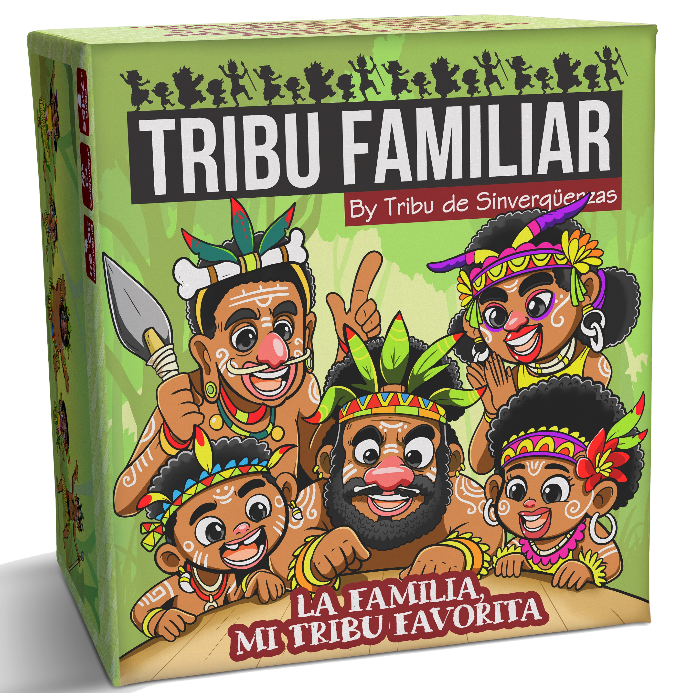
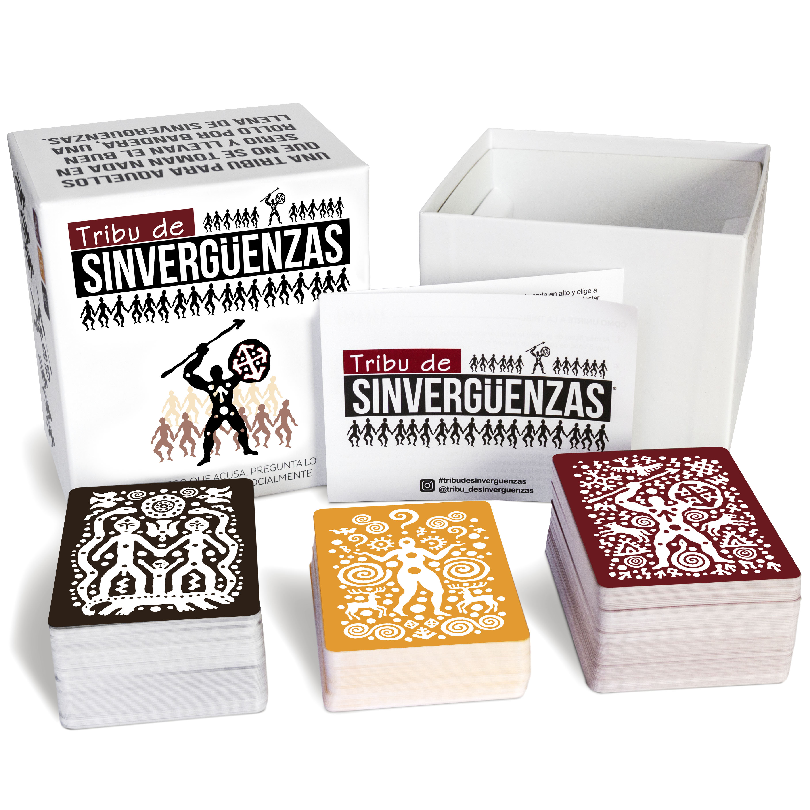
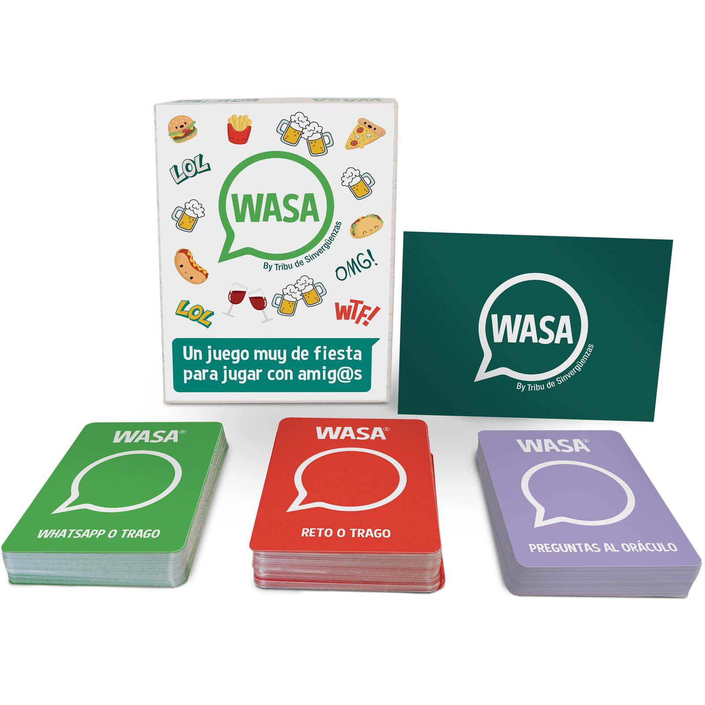

Para las tribus de amig@s:
Tribu de Sinvergüenzas
Un juego que acusa, pregunta lo imposible y te reta socialmente.

Para l@s más guasones:
WASA
by Tribu de Sinvergüenzas
Un juego muy de fiesta para jugar con amig@s. Prepárate para réir.

Para l@s más pecador@s:
Tribu de Sinvergüenzas
SIGAMOS PECANDO
Lo hemos vuelto a hacer. El juego que más ruido ha hecho en las redes ha vuelto a nacer con esta versión. Nuevas cartas que te permitirán seguir disfrutando en estos tiempos grises.
No hace falta tener la primera versión para jugar a esta nueva edición de Tribu de Sinvergüenzas.